In this project, I explored the practical implementation of cryptographic hash functions and digital signatures using CrypTool-1. I gained hands-on experience with HMAC generation, hash function sensitivity, digital signature workflows, RSA encryption, and vulnerability testing through hash collision attacks. This work deepened my understanding of how modern cryptography protects message integrity and authentication in real-world systems.
I began by implementing Keyed-Hash Message Authentication Code (HMAC), which combines a secret key with a message to ensure both message integrity and sender authentication. This approach requires both the sender and recipient to share a common key.
I opened the CrypTool example file and navigated to the HMAC generation utility.
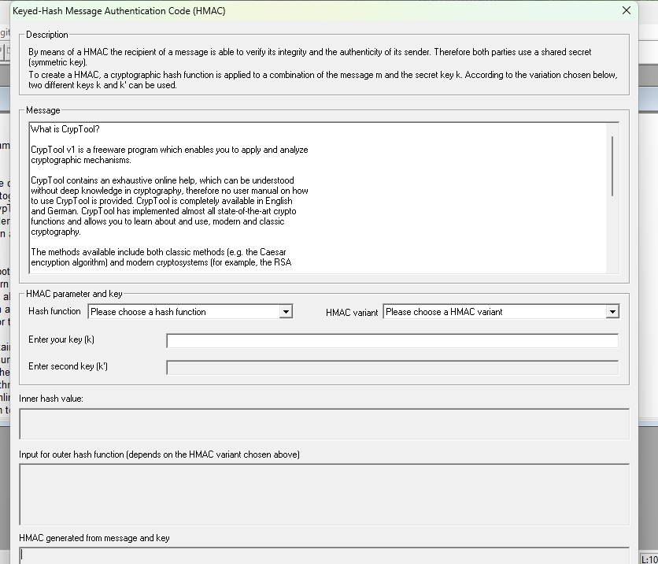
I configured the system to use SHA-1 as the hash function with double hashing as the HMAC variant. Using the key "chattanooga", I generated the HMAC code from the plaintext message:
Result: C0 82 0F 6F 36 27 5E D7 B2 8C 6A 06 E4 FC 99 67 A1 AF 03 2E
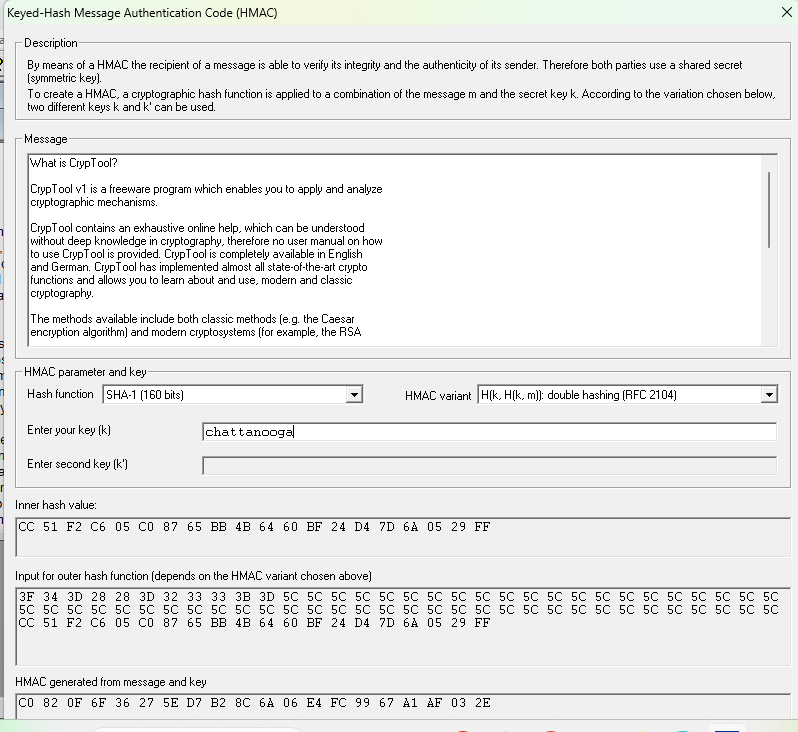
Next, I investigated one of the most critical properties of cryptographic hash functions: sensitivity to even minimal plaintext changes. This phenomenon is known as the "avalanche effect."
I accessed the Hash Demonstration tool to measure this behavior.
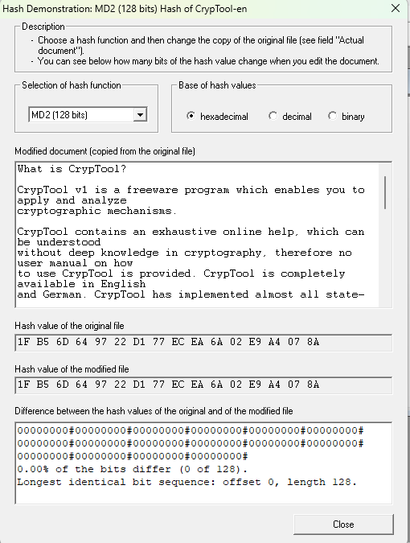
I performed a controlled test by adding a single space character after "CrypTool" in the plaintext. The result was striking:
Result: 57.03% of the hash bits differed (73 out of 128 bits)
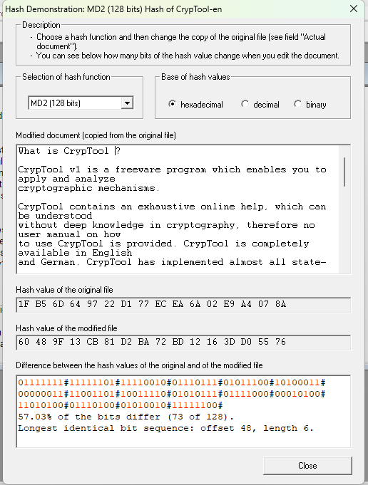
This demonstrates that a well-designed cryptographic hash function exhibits the avalanche effect—a small change in input produces a dramatically different output. This property is essential for preventing attackers from creating fraudulent messages that produce the same hash as legitimate ones.
I explored the complete digital signature workflow by generating a certificate and creating cryptographic signatures. I started by accessing the Signature Demonstration tool.
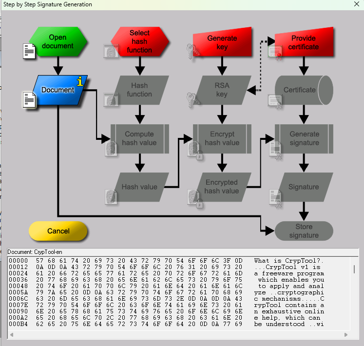
I selected MD5 as the hash function for this demonstration (though I later noted that stronger algorithms are recommended for production use).
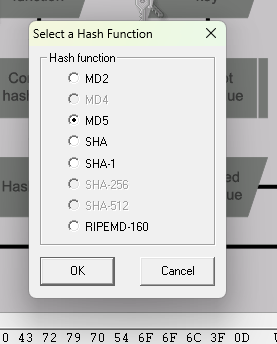
The RSA signature process begins with generating a key pair. I initiated the key generation process and then generated large prime numbers for the RSA modulus.
Key generation interface showing prime number generation optionsI specified the search parameters for the prime numbers: - Lower limit: 2^150 - Upper limit: 2^151
Then I applied these constraints to generate suitable primes for the RSA encryption system.
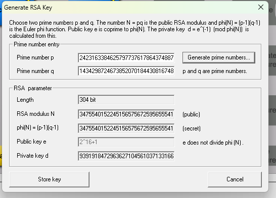
I stored the generated key pair for later use in signing operations.
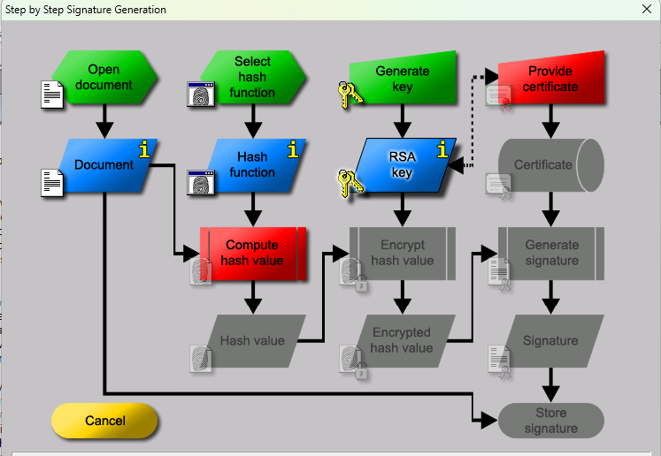
To complete the public key infrastructure setup, I generated a digital certificate. I entered the following information:
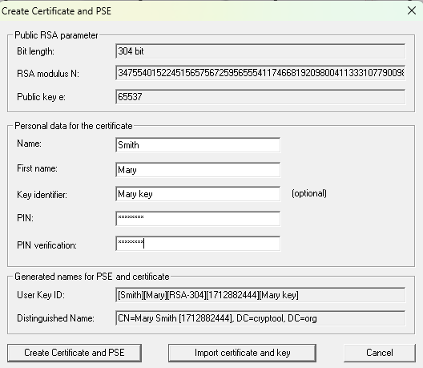
The system then created the certificate and Personal Security Environment (PSE).
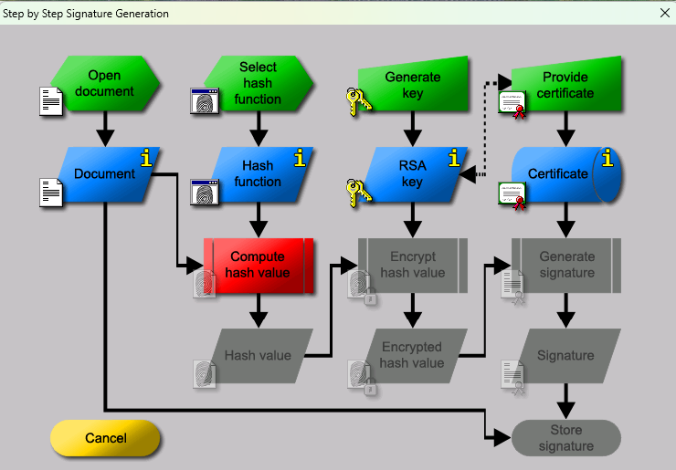
The digital signature workflow involves several sequential steps. First, I computed the hash value of the message I wanted to sign.
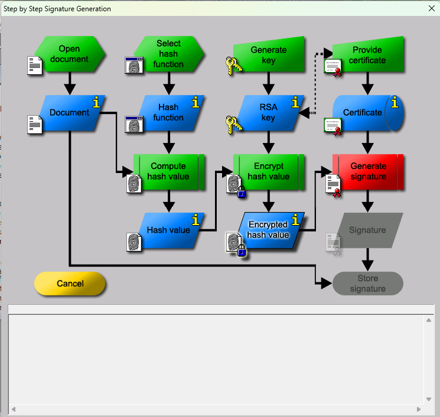
Next, I encrypted this hash value using the private key—this is the core operation that creates the digital signature.
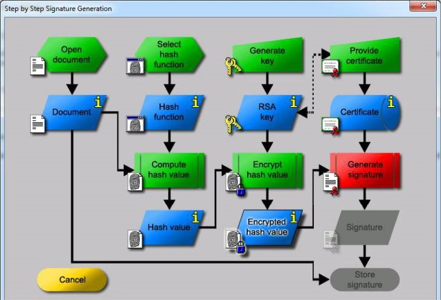
I then generated the complete signature, which combines the encrypted hash with the necessary metadata.
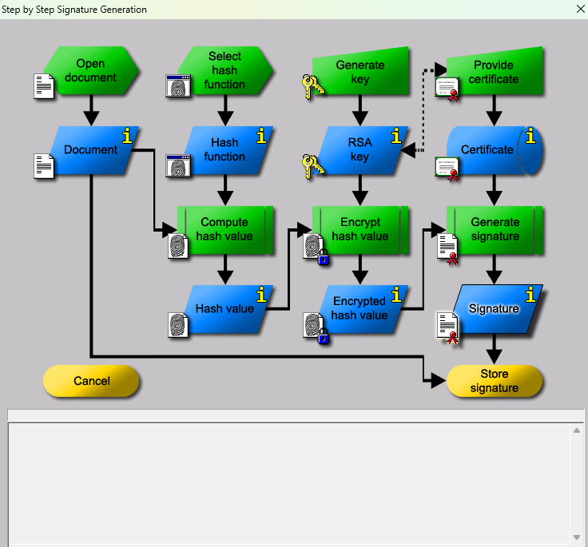
Finally, I stored the signature for later verification and demonstration purposes.
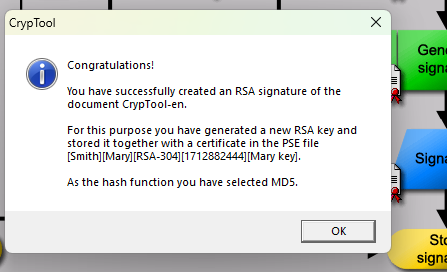
The complete RSA digital signature was successfully created for the test document.
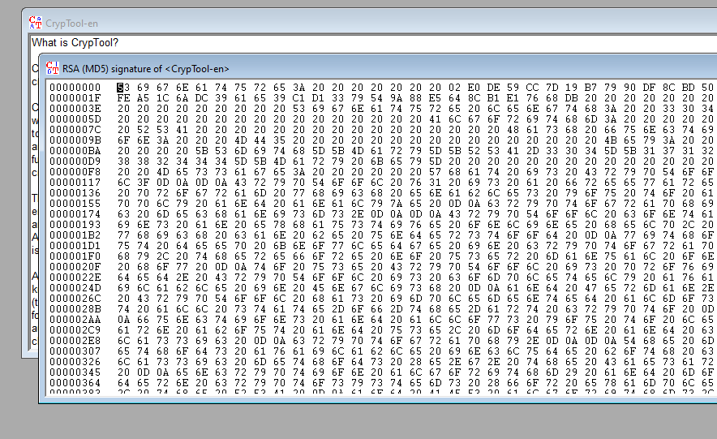
I opened the CrypTool example document for the RSA signature demonstration.
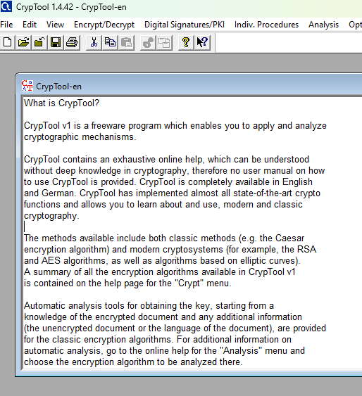
I accessed the key generation utility to create a new RSA key pair for signing operations.
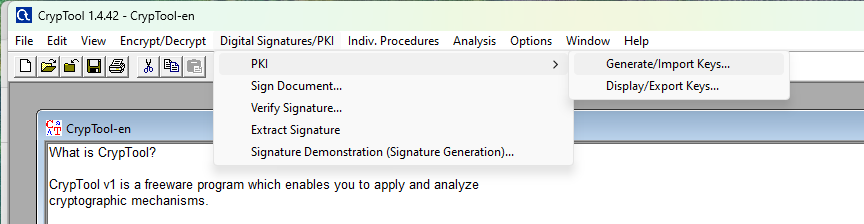
I entered the following key information:
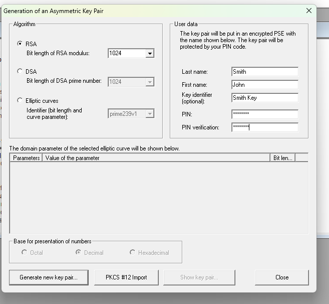
The system confirmed the key generation success.
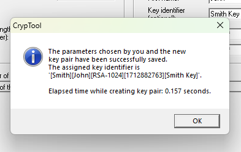
I examined the generated key pair to understand its structure.
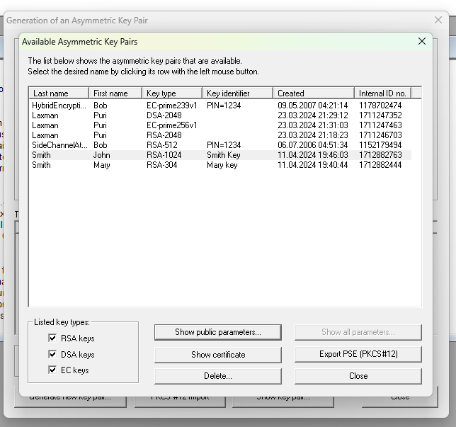
I also reviewed the associated certificate that was automatically generated with the key pair.
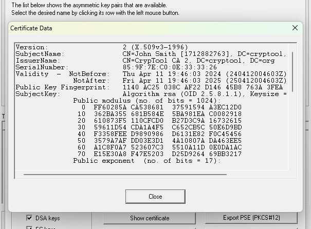
With the key infrastructure in place, I signed the CrypTool document using the following parameters:
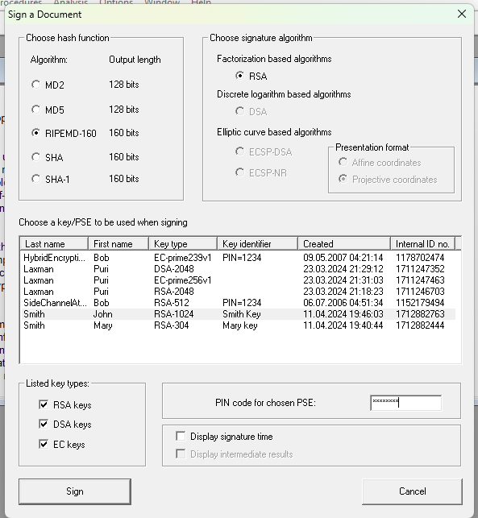
The signature was successfully generated and attached to the document.
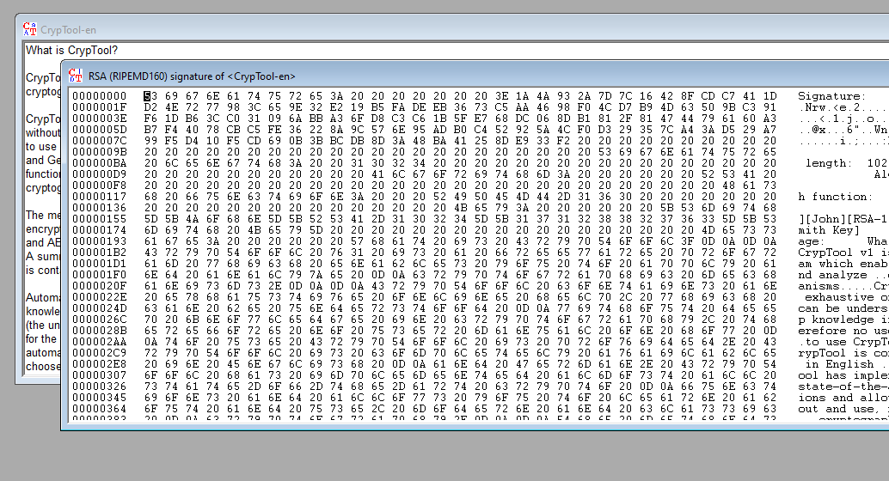
For clarity and verification purposes, I extracted the signature separately from the document using the Extract Signature function.
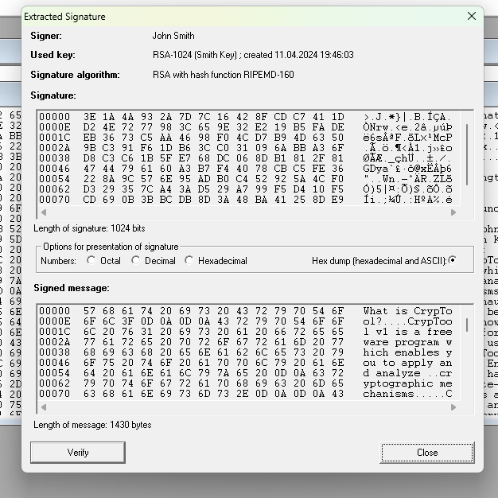
I then verified that the signature was valid and that the document had not been altered.
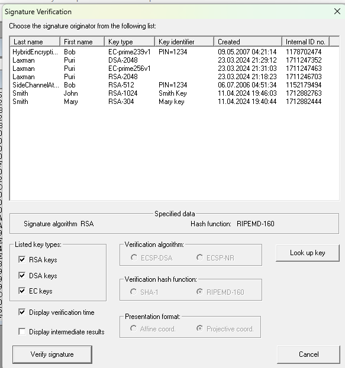
I selected John Smith's signature from the available list and performed the verification.
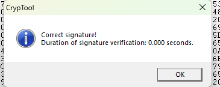
To demonstrate the security of digital signatures, I intentionally modified the document by removing the word "What" and then attempted to verify the signature again.
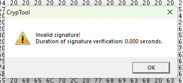
This confirmed that any alteration to a signed document causes signature verification to fail, providing tamper-proof evidence of authenticity.
In this phase, I investigated how weaker hash functions become vulnerable to collision attacks—scenarios where two different messages produce the same hash value. This is a critical cryptographic weakness.
I accessed the hash collision attack utility.
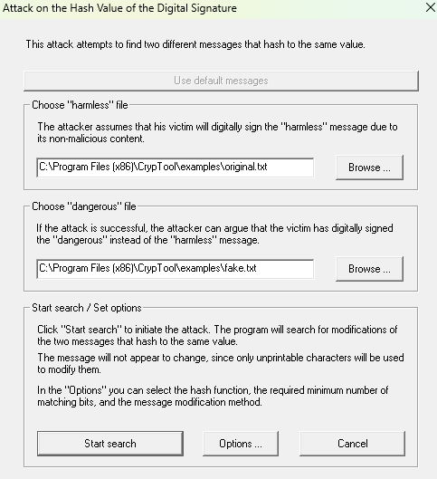
I configured the attack parameters in the Options dialog.
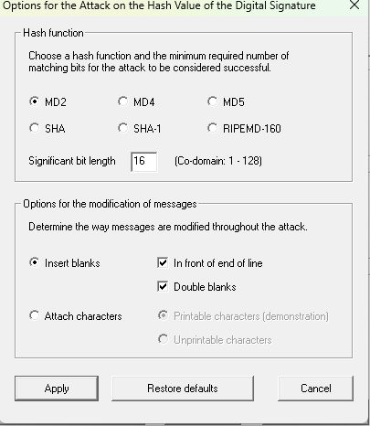
I configured the attack options, selecting the hash function and specifying the significant bit length to make the attack computationally feasible within a reasonable timeframe. The final attack used MD5 with a 40-bit match target.
I initiated the hash collision search algorithm to find two different messages that produce the same hash value.
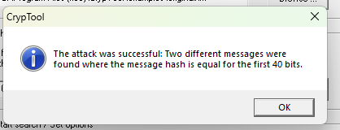
The system executed the search and generated statistics on the collision discovery process.
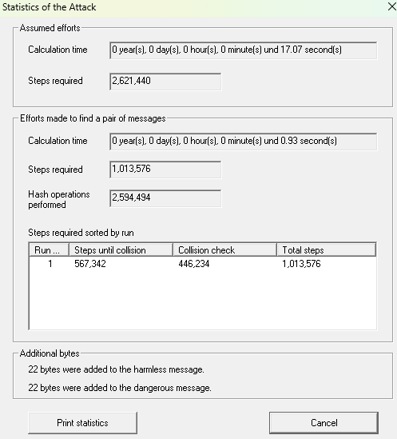
The algorithm successfully found two distinct messages that produce identical hash values.
Collision found: two different messages with the same hashThe experiment demonstrated that a 72-bit partial collision (where the first 72 bits of hash values are identical) was discoverable within days using a single personal computer. This finding has significant implications for cryptographic security:
Important Conclusion: Hash functions with bit lengths of 128 bits or fewer are vulnerable to practical attacks using parallel computing resources. For secure applications, hash functions with at least 160-bit outputs are recommended to resist modern computational capabilities.
Cryptographic Hash Properties: Well-designed hash functions must exhibit extreme sensitivity to input changes (avalanche effect) while being computationally irreversible.
HMAC for Authentication: Using keyed hash functions provides both message integrity verification and sender authentication through shared secret keys.
Digital Signature Workflow: The complete signature process involves key generation, hash computation, private key encryption, and reversible verification using public keys.
RSA Implementation: Modern digital signatures rely on asymmetric cryptography where only the message hash is encrypted, not the entire message, for efficiency.
Tamper Detection: Digital signatures provide cryptographic proof that documents have not been modified—any change causes verification to fail.
Hash Function Strength Matters: Cryptographic security depends critically on hash function bit length; legacy algorithms like MD5 are now considered broken and vulnerable to practical attacks.